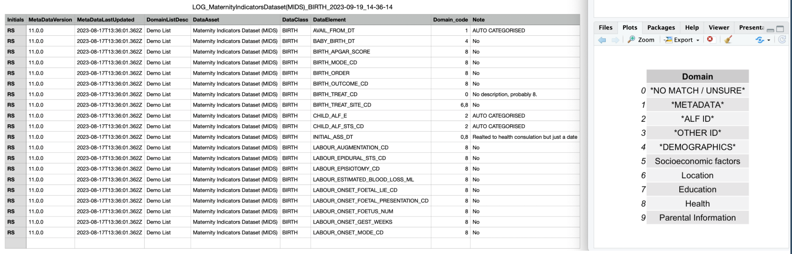

Metadata tools and resources
browseMetadata.RmdGetting started with metadata
There are many existing tools and resources that allow you to browse metadata for health datasets, and we list some of them here:
Health Data Research Innovation Gateway and the connected Metadata Catalogue
- The metadata used as input for this
RpackagebrowseMetadata. - Managed by Health Data Research UK in collaboration with the UK Health Data Research Alliance. More information can be found on the Health Data Research Innovation Gateway and the Metadata Catalogue.
- Described as a search-engine or ‘portal’ to help find health datasets that exist in the UK.
- The datasets discoverable through the Gateway are from organisations in the NHS, research institutes, and charities, which are part of the UK Health Data Research Alliance.
A related resource from HDRUK is the Phenotype Library, described as a comprehensive, open access resource providing the research community with information, tools, and phenotyping algorithms for UK electronic health records. Also see the Concept Library developed by the SAIL databank team and collaborating organisations.
British Heart Foundation Data Science Centre (BHF DSC) Dashboard
- Offers an overview and interactive summaries of the datasets currently available through CVD-COVID-UK/COVID-IMPACT within the secure Trusted Research Environments (TREs) provided by NHS England for England, the National Data Safe Haven for Scotland and the SAIL databank for Wales.
- This dashboard allows exploration of data dictionaries, data coverage, and data completeness. More information can be found on the BHF DSC Dashboard.
Office for National Statistics (ONS) Secure Research Service (SRS) Metadata Catalogue
- Metadata for datasets within the ONS SRS. It is possible to filter for datasets related to ‘Health’ by clicking this tag on the first page. More information can be found on the ONS SRS Metadata Catalogue.
There are more tools and resources out there. If you know of a resource that offers accessible health metadata with good breadth and/or depth of coverage, please request we add it here!
Getting Started Guide for browseMetadata R Package
Installation Instructions
To install the browseMetadata package, follow these
steps in your R console:
-
Install Devtools Package
install.packages("devtools") -
Install
browseMetadatafrom GitHubdevtools::install_github("aim-rsf/browseMetadata")
Running an Example
To familiarize yourself with browseMetadata, here’s a
quick guide:
-
Accessing Documentation
- Type
?domain_mappingin the R console to view the function’s documentation.
- Type
-
Running a Demo
- Execute
domain_mapping()to run the function in demo mode. - The demo mode uses package data, so no need for your own input files.
- Follow the example provided in the documentation for guidance.
- Execute
-
Viewing Output
- Check the Plots tab in R. The domain mappings will be displayed there, providing context for the categorizations.
Using Your Own Inputs
When using your own data, be aware of these default domain categories:
- NO MATCH / UNSURE
- METADATA
- ALF ID
- OTHER ID
- DEMOGRAPHICS
Understanding the Log File Output
Each run of the function generates a log file:
Contents: The log file includes your decisions, the date and time stamp, Data Class, Data Asset, and the initials of the person categorizing.
Structure: For each Data Element in the DataClass, the log file assigns a ‘Domain_code’, indicating its domain categorization.
Auto-Categorization: Some entries are auto-categorized. Please review these for accuracy. Multiple domains can map onto each variable.
-
Example: Below is an example log file output (left) alongside the demo domain list used (right).

Usage: This log file can be used for comparison across users and as an input in later analysis steps to determine variable representation in various domains.